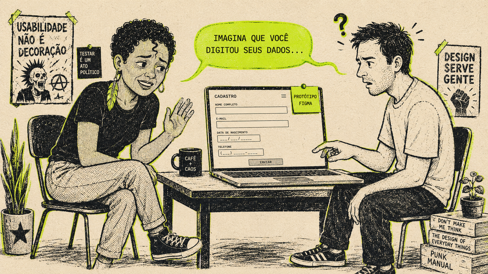
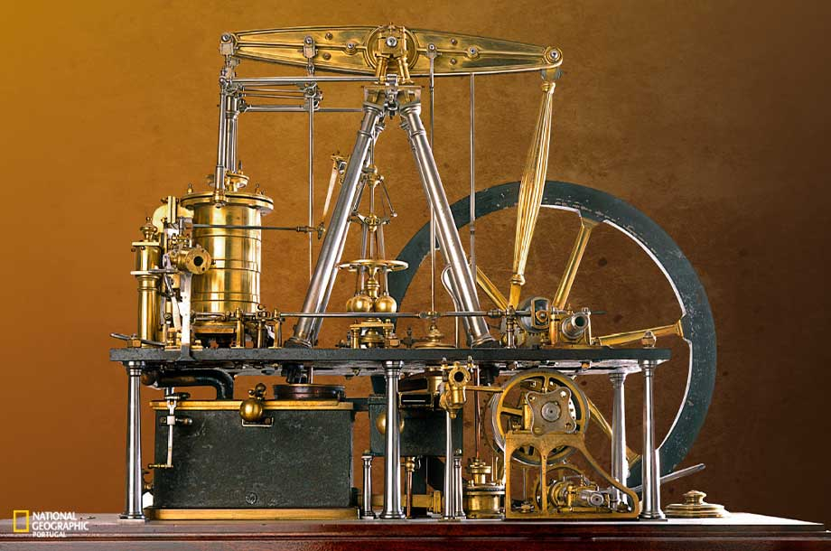
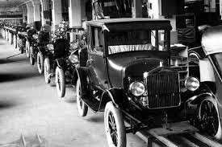
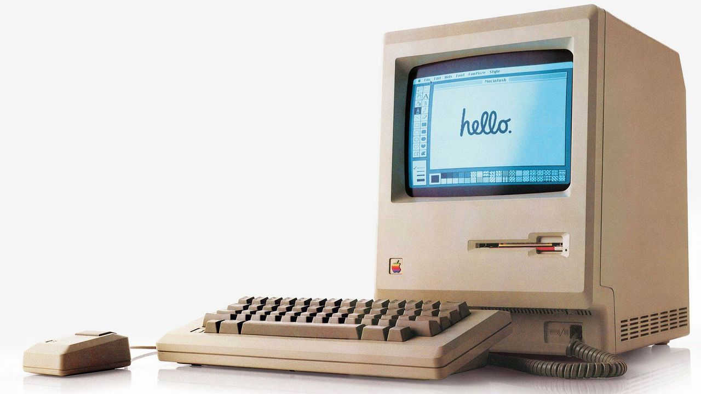
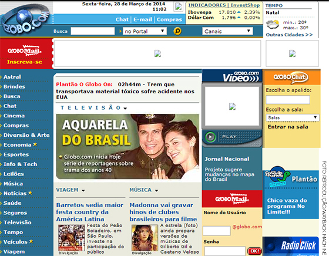
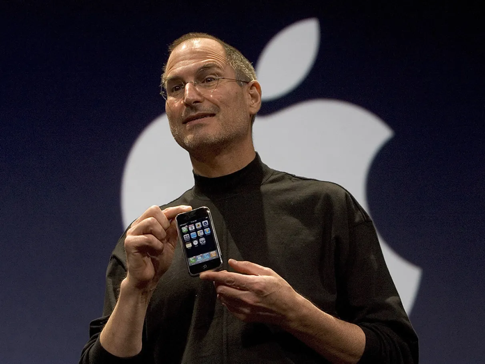
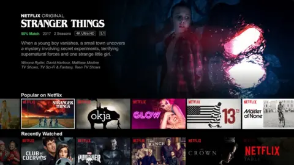
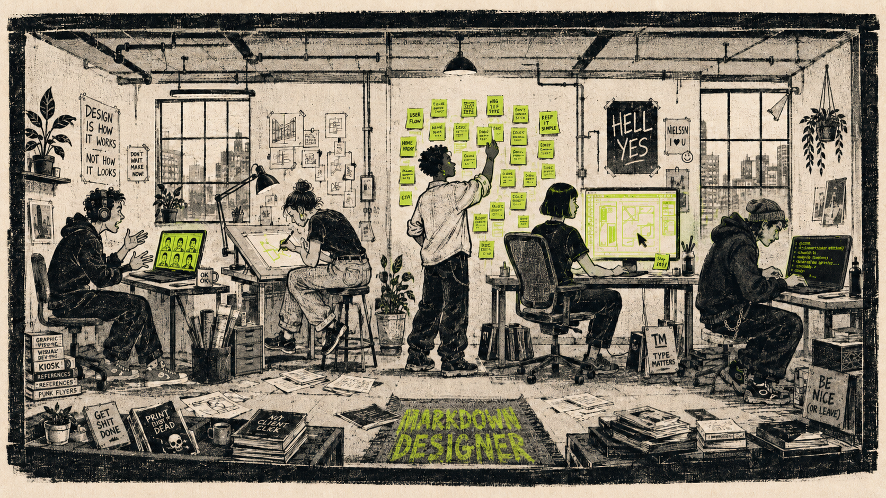

Por que só protótipo estático não rola mais
Tem hora que imaginar não é o suficiente... Tem que funcionar!
Protótipo Funcional · por Nanda Dias

Produtos vivos
O que funcional parece na prática
Linha do tempo
Um pouco de história
→ PARA: a máquina e o processo

A máquina dita o ritmo
O operário se molda à máquina, não o contrário.
→ PARA: extrair mais do processo

O cronômetro
O engenheiro projeta o movimento exato do corpo.
→ PARA: reduzir o erro humano
1940–1970
O erro deixou de ser humano
O produto considera limitações cognitivas e físicas do humano.
→ PARA: reduzir o tempo de aprendizado

O usuário ganha nome
User Experience na Apple — janelas, ícones, lixeira.
→ PARA: derrubar a barreira de entrada

Heurísticas para o clique
A web exige usabilidade para quem nunca operou um computador.
→ PARA: a experiência como diferencial

Na palma da mão
"Centrado no usuário" deixa de ser jargão e vira processo medível.
→ PARA: a recomendação e os dados

O algoritmo de recomendação
O designer divide a autoria da experiência com modelos.
→ PARA: a intenção de quem usa
2022–presente
A intenção vira interface
Sai o fluxo desenhado, entra o espaço de possibilidades.
01 / 08
Foco do projeto
Máquina
Processo
Pessoa
Intenção
O recorte de hoje
Nossa fotografia atual
- Inputs clássicos
- Responsividade
- Feedbacks
- Dados diversos
- Adaptação da interface
- Sensação de quem usa
- Inputs complexos
- Jornada subjetiva
- GenUI
Não é sobre abandonar o Figma...

Protótipo funcional
A gente também fará design com código
Variabilidade
Quando o design muda de acordo com o conteúdo
Estados & Dados
Quando a interface precisa agir e reagir
Inputs & Outputs